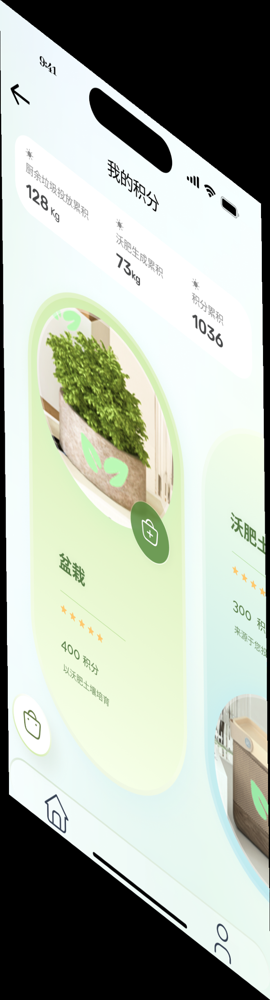
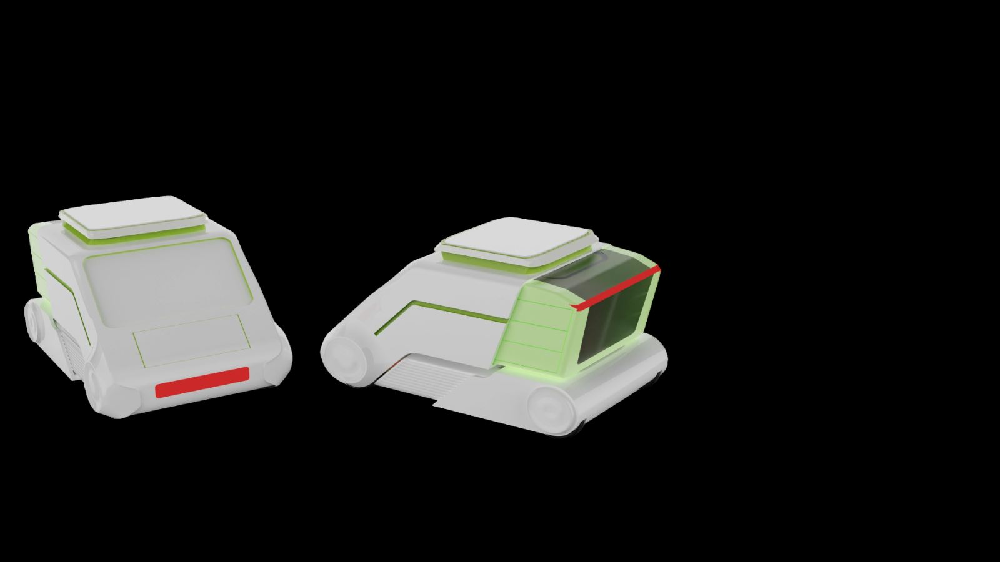
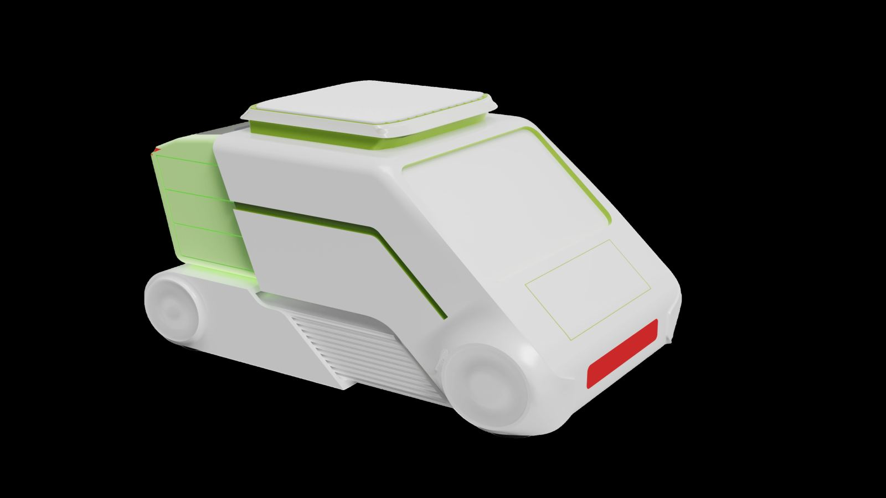
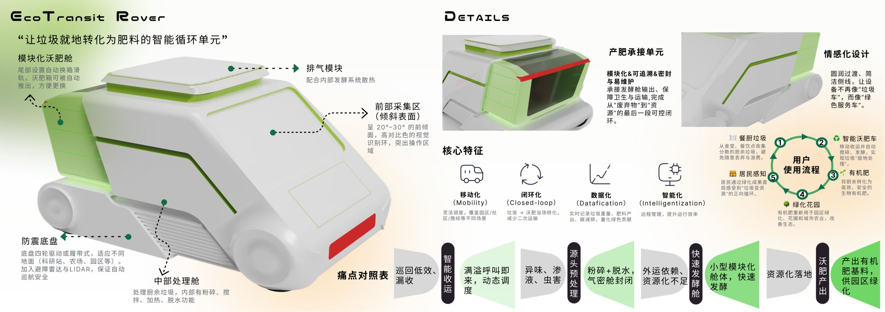

Brief / 设计简介
让垃圾就地转化为肥料的智能循环单元
EcoTransit Rover 是一款智能化、环保型的移动垃圾处理车辆，能够在大型园区、大学城或商业综合体中自由巡航，收集分散的厨余垃圾并现场完成粉碎、发酵与转化，生成可再利用的有机肥料。
An intelligent and environmentally friendly mobile waste disposal vehicle that cruises in large parks, university towns or commercial complexes, collects scattered kitchen waste and completes on-site crushing, fermentation and transformation into reusable organic fertilizer — a green closed loop of “local resource utilization”.
- 核心功能
- 自由巡航 · 现场收集 · 粉碎发酵 · 转化有机肥。
- 设计情感导向
- 绿色闭环 / Green Closed Loop。
- 设计价值定位
- 降低运维成本，实现「就地资源化」的可持续闭环。
设计价值定位 / Value Positioning
Context / 背景研究
从集中外运到就地资源化，处理方式正在换代
厨余垃圾处理方式演进
Landfill — In-situ← 横向滑动查看完整时间轴
资源化率趋势 / Trend
2010 — 2050有机废弃物资源化率由 13% 上升至 70%，就地化处理成为关键增量。
痛点对照表
Pain Point → Strategy-
01
巡回低效、漏收Collection
智能收运 —— 满溢呼叫即来、动态调度路线。
-
02
异味、渗液、虫害Sanitation
源头预处理 —— 粉碎 + 脱水，气密舱封闭。
-
03
外运依赖、资源化不足Logistics
快速发酵舱 —— 小型模块化舱体，快速发酵。
-
04
资源化落地难Reuse
资源化落地 —— 产出有机肥基料，直供园区绿化。
Source — 原始展板痛点对照表 / 桌面研究整理，2022
Features / 核心特征
移动化、闭环化、数据化、智能化
移动化
灵活调度，覆盖园区、社区、商圈等不同场景。
闭环化
就地处理 + 就地转化，减少二次运输。
数据化
实时记录垃圾重量、肥料产出、碳减排，量化绿色贡献。
智能化
远程管理，提升运行效率。
兼具高效、可持续与未来感的移动式微型工厂。
从分散厨余到有机肥料，再回到园区绿化，形成资源循环。
System / 服务系统
五步闭环与三类用户角色
用户使用流程 / Service Loop
01 — 05 Closed Loop餐厨垃圾
从食堂、餐饮点收集分散的厨余垃圾，避免随意丢弃与浪费。
智能沃肥车
移动收运并自动完成粉碎、脱水与发酵，实现「就地处理」。
有机肥
高效、安全的生物有机肥。
绿化花园
有机肥重新用于园区绿化、花圃或城市农业，改善生态。
居民感知
居民通过绿化成果直观感受到「垃圾变资源」的正向循环。
用户角色 / Users
Three Stakeholders居民
关注分类投放与绿化成果，直观看到垃圾变资源的转化过程。
- 分类投放
- 绿化成果
- 过程感知
保洁
关注满溢、异味与收运频次，依赖车辆的智能调度与及时处理。
- 满溢监测
- 异味控制
- 收运频次
管理人员
关注调度、数据与成本，通过系统实现高效运维与资源管理。
- 智能调度
- 数据分析
- 成本控制
App / 积分系统
投放厨余垃圾，累积可兑换的绿色积分

Hover · 滚动预览积分商城 / Exchange
Redeem- 01投放厨余每次投放记录重量，累加为「厨余垃圾投放累积」。
- 02生成沃肥处理完成后记录「沃肥生成累积」，并同步换算积分。
- 03累积积分顶部三项数据统一汇总，投放与生成记录可随时回看。
- 04兑换回到绿化用积分兑换盆栽与沃土，让「垃圾变资源」被居民直接感知。
Detail / 关键细节
六大模块构成完整的移动处理能力
前部采集区 · 倾斜表面
呈 20°–30° 的前倾面，高对比色的视觉识别环，突出操作区域，让投放动作一目了然。
中部处理舱
处理厨余垃圾，内部有粉碎、搅拌、加热、脱水功能，在现场完成初步处理。
模块化沃肥舱
尾部设置自动换箱滑轨，沃肥箱可被自动推出，方便更换与转运。
排气模块
配合内部发酵系统散热，同时控制气味，减少对周边环境的影响。
防震底盘
底盘四轮驱动或履带式，适应科研站、农场、园区等不同地面，加入避障雷达与 LIDAR，保证自动巡航安全。
情感化侧线
圆润过渡、简洁侧线，让设备不再像「垃圾车」，而更像一台「绿色服务车」。
Form / 形态单元
整体形态与产肥承接单元


产肥承接单元
模块化 + 可追溯 & 密封与易维护。承接发酵舱输出，保障卫生与运输，完成从「废弃物」到「资源」的最后一段可控闭环。
- 模块化
- 可追溯
- 密封易维护
情感化设计
圆润过渡、简洁侧线，让设备不再像「垃圾车」，而像「绿色服务车」，降低公共设施在园区中的视觉侵入感。
- 圆润过渡
- 简洁侧线
- 绿色服务车
Process / 原始展板
细节、核心特征与使用流程展板
点击展板可放大查看原始排版与全部细节标注。
